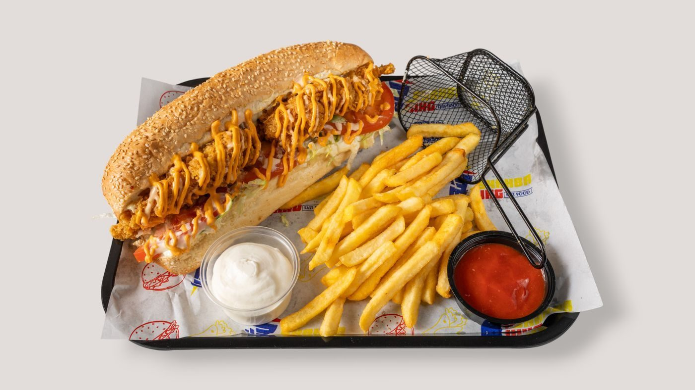
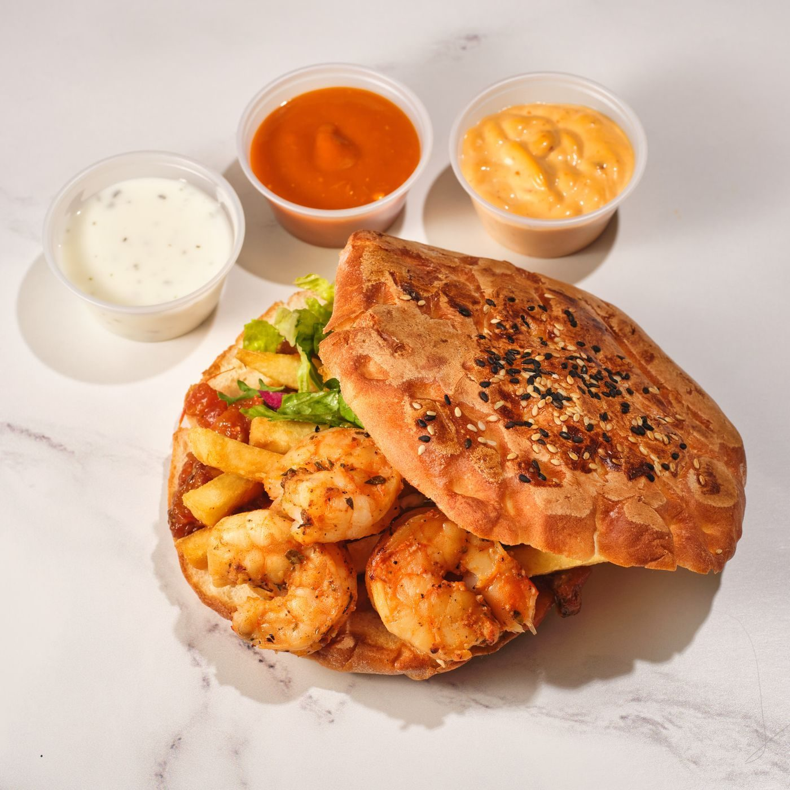

In the kitchen


Late-night Mediterranean truck
Gyro Master is a San Antonio food truck serving Mediterranean plates and wraps Wednesday through Saturday nights, plus pistachio baklava.

Gyro Master parks at 2410 N St Mary's St in San Antonio and serves from 7:00 PM to 2:30 AM, Wednesday through Saturday. The menu covers gyros, shawarma plates and wraps, falafel plates, loaded fries, and pistachio baklava.

2410 N St Mary's St, San Antonio, TX
Wednesday to Saturday, 7:00 PM to 2:30 AM